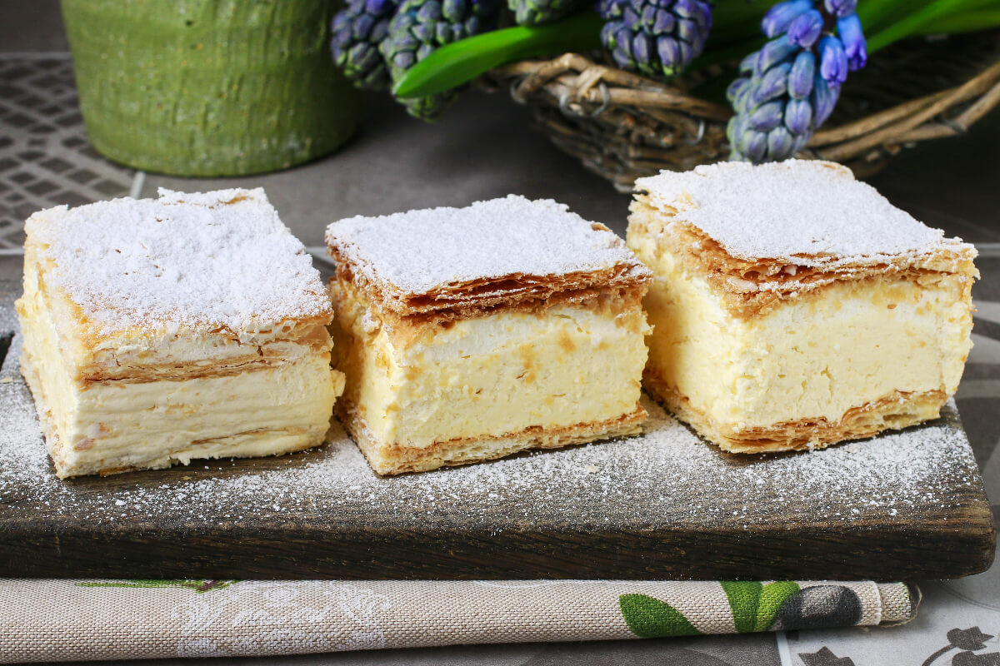

This rich, silky egg custard is thickened with gelatin and combined with whipped cream. It is traditionally served cold, and is usually garnished with pieces of fresh fruit or drizzled over with sweet sauces. Although its origins are quite unclear, it is known that Bavarian cream hails from either Germany or France.
Meal prep time : 4 hours
Servings : 12